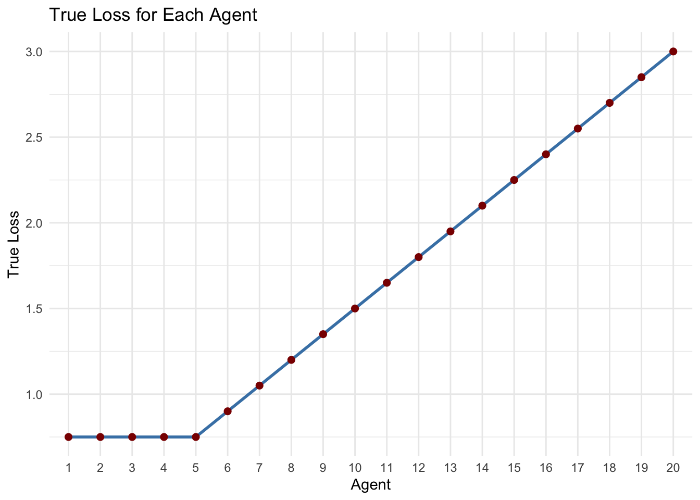
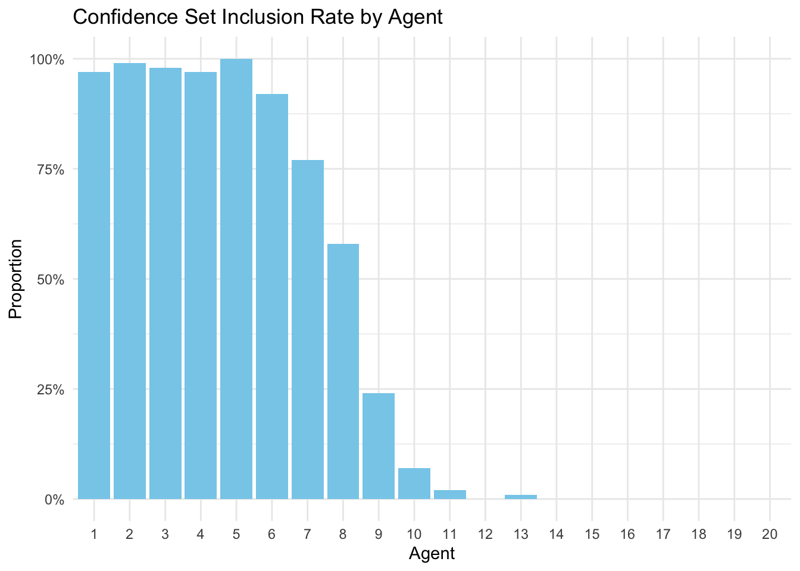
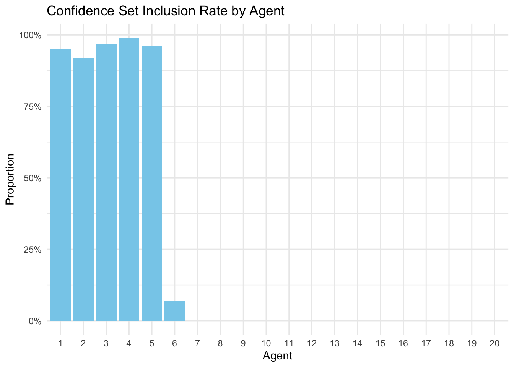

sample_size <- 30
agent_num <- 20
set.seed(100)
true_loss <- 3*((1:agent_num) / agent_num)
true_loss[1:5] <- true_loss[5]
cov <- diag(length(true_loss))
data <- MASS::mvrnorm(sample_size, true_loss, cov)
rownames(data) <- paste0("Obs_", 1:sample_size)
colnames(data) <- paste0("Agent_", 1:agent_num)Argmin Inference with argminCS
Welcome to the tutorial for the R package argminCS. When comparing noisy performance metrics across several competing agents - such as machine learning algorithms, voting candidates, or maximum likelihood parameter estimates - we are often interested in identifying the best-performing agents.
Suppose we are evaluating 20 agents, and for each, we have 30 noisy loss measurements:
Here are the first few rows of the observed data:
print(data[1:5, 1:5]) Agent_1 Agent_2 Agent_3 Agent_4 Agent_5
Obs_1 0.08628958 1.52605633 0.7047454 0.7915007 -1.1894394
Obs_2 0.62349182 0.02721128 1.1909000 1.8698977 -2.5707822
Obs_3 2.39237424 1.25907541 2.9853762 0.9891629 1.6920819
Obs_4 0.24290152 0.90461497 0.1638452 -0.2890839 0.7871514
Obs_5 0.23151296 1.05924724 1.3493602 0.2582443 0.4914450Agents 1–5 have the lowest true losses.
library(ggplot2)
df <- data.frame(
Agent = factor(1:agent_num),
True_Loss = true_loss
)
ggplot(df, aes(x = Agent, y = True_Loss, group = 1)) +
geom_line(color = "steelblue", linewidth = 1) +
geom_point(color = "darkred", size = 2) +
theme_minimal() +
labs(
title = "True Loss for Each Agent",
x = "Agent",
y = "True Loss"
)
A simple approach is to use the agent with the smallest sample mean loss as the estimated best:
col_avg <- colMeans(data)
winner_est <- which.min(col_avg)
cat("Estimated winner: Agent", winner_est, "with average loss", col_avg[winner_est], "\n")Estimated winner: Agent 5 with average loss 0.5119673 cat("True winners are Agents 1 to 5\n")True winners are Agents 1 to 5However, due to noise in the observations, it’s important to quantify the uncertainty in this winner selection. The argminCS package provides tools to construct a confidence set for the best agent.
library(argminCS)
confidence_set <- CS.argmin(data, method = "SML")
print(confidence_set)[1] 1 2 3 4 5 6 7 8 9The algorithm think agent 1-9 are all potential best performers given the current data. We made some type-II errors since it includes suboptimal ones.
We now repeat the procedure 100 times to estimate how often each agent is included in the confidence set:
set.seed(123)
repeat_N <- 100
results <- matrix(0, nrow = repeat_N, ncol = agent_num)
colnames(results) <- paste0("Agent_", 1:agent_num)
for (i in 1:repeat_N) {
# Generate new data
data_i <- MASS::mvrnorm(sample_size, true_loss, cov)
# Compute confidence set
cs_i <- CS.argmin(data_i, method = "SML")
# Mark agents in the confidence set
results[i, as.numeric(cs_i)] <- 1
}
inclusion_prop <- colSums(results) / repeat_Ndf_inclusion <- data.frame(
Agent = factor(1:agent_num),
Inclusion = inclusion_prop
)
ggplot(df_inclusion, aes(x = Agent, y = Inclusion)) +
geom_bar(stat = "identity", fill = "skyblue") +
labs(
title = "Confidence Set Inclusion Rate by Agent",
x = "Agent",
y = "Proportion"
) +
theme_minimal() +
scale_y_continuous(labels = scales::percent_format(accuracy = 1))
Next, we increase the sample size:
sample_size_large <- 500Repeat the simulation at the larger sample size:
set.seed(123)
results <- matrix(0, nrow = repeat_N, ncol = agent_num)
colnames(results) <- paste0("Agent_", 1:agent_num)
for (i in 1:repeat_N) {
# Generate new data
data_i <- MASS::mvrnorm(sample_size_large, true_loss, cov)
# Compute confidence set
cs_i <- CS.argmin(data_i, method = "SML")
# Mark agents in the confidence set
results[i, as.numeric(cs_i)] <- 1
}
inclusion_prop_large <- colSums(results) / repeat_NWith a larger sample size, suboptimal agents are included less frequently in the confidence set. In fact, in our paper, we theoretically showed that each of the optimal agents is included with probability exceeding 0.95 while the probability of including any suboptimal agent converges to zero.
df_inclusion <- data.frame(
Agent = factor(1:agent_num),
Inclusion = inclusion_prop_large
)
ggplot(df_inclusion, aes(x = Agent, y = Inclusion)) +
geom_bar(stat = "identity", fill = "skyblue") +
labs(
title = "Confidence Set Inclusion Rate by Agent",
x = "Agent",
y = "Proportion"
) +
theme_minimal() +
scale_y_continuous(labels = scales::percent_format(accuracy = 1))
References
- Zhang, T., Lee, H., & Lei, J.. Winners with Confidence: Discrete Argmin Inference with an Application to Model Selection.